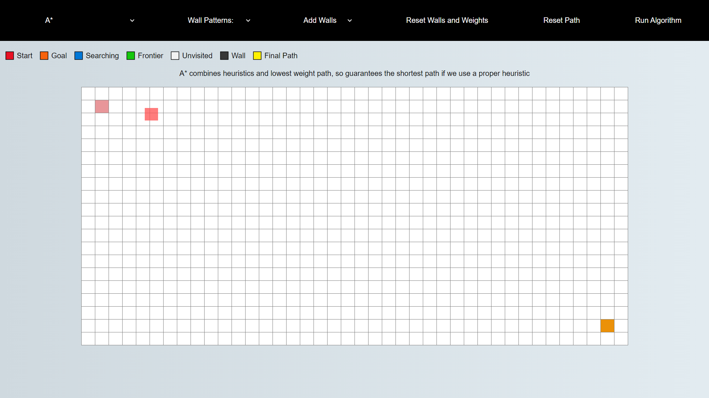

That's all folks! If you enjoyed you can check out the source code on GitHub by clicking on the image below
Simply select an algorithm from the dropdown menu at the top left corner and click "run algorithm" at the top right corner
You don't have to draw walls and weights manually
If you select an item from the dropdown menu under "wall patterns" it will generate a maze of walls or weights automatically
To move a start or goal tile, simply drag and drop it onto an empty tile
You can draw walls and weights on the grid to see how the algorithms react to them
To do this simply drag your mouse along the grid and it'll smoothly draw across it
You can configure which one you want to draw using the menu at the top of the screen
When you're exploring the world not all roads are created equal
Some are smooth and easy to drive on, while some are bumpy and full of potholes
So what seems like the shortest path might not actually be the shortest path if we have to cross a bunch of badly paved roads
To model this, we can assign a tile a weight which tells us how much it costs to cross it
To find the shortest path, some algorithms will try to minimise the total cost. Algorithms that do this are weighted
However some algorithms simply ignore these weights. These algorithms are unweighted
All of the algorithms have a different way of going about their job, and they all have different goals they want to achieve
Some algorithms only care about finding a path. They'll take the first path they find no matter how long winded the path may be
Others are designed to always find the shortest path. They don't tend to find the path as fast, but they can guarantee that there's no other path that's shorter than theirs
Some algorithms are what's known as "weighted", and some are "unweighted". We'll get into what this means on the next page
A pathfinding algorithm is an algorithm that tries to find a path between two points
For instance, when you use Google maps and want to find a route between two places you're using a pathfinding algorithm
This app aims to demonstrate the process of how these algorithms actually go about finding this route
To demonstrate the algorithms I've used a grid whose tiles light up to show what the algorithm is doing at any point in time
You can add in walls that the algorithm can't cross to see how the algorithms will react
This tutorial will explain what this app is and walk you through the features
You can jump in immediately by pressing "finish tutorial", or click "next" to access the next portion of the tutorial